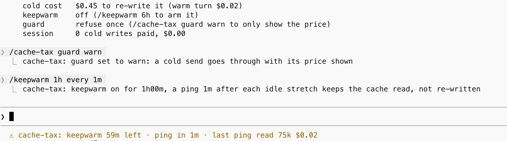
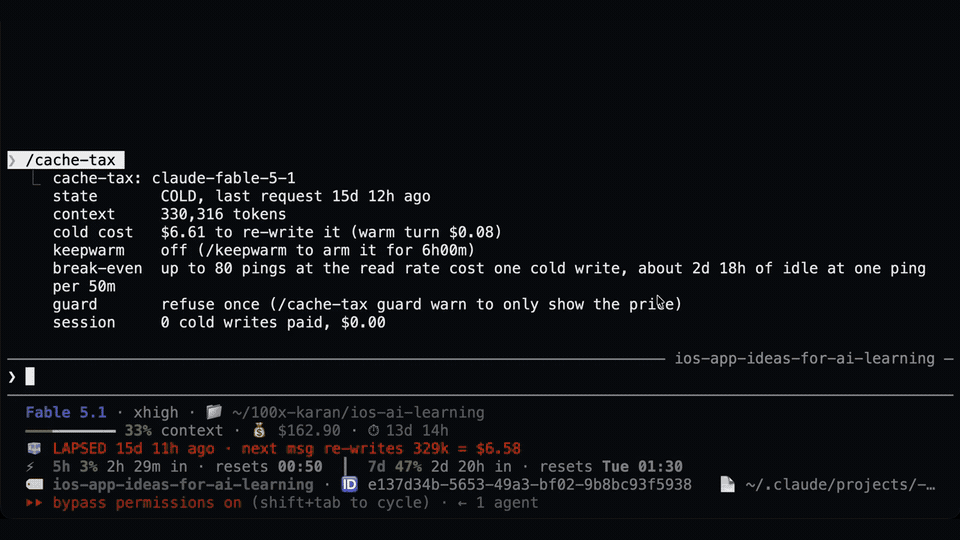

Keep your cache warm.
Know the cost when it isn’t.
A mod for Claude Code’s prompt cache. Keep it warm while you take a break, or see the estimated rewrite cost before you send a cold prompt.
Free and open source. Claude Code 2.1.287+. Warming needs a one-hour cache and Claude Code left running. Pings cost tokens.
Before your break
Run /keepwarm 90m for a 90-minute window. After 50 idle minutes, Cache Tax sends a model request over the session to refresh its cache.
Each ping checks its usage. No cache reads, or writes reaching 10% of reads, stop the loop. /keepwarm off stops it too. An already-cold session waits for your next turn before pinging.
When you return cold
For a context of at least 50,000 tokens, the guard stops your ordinary message once when its one-hour clock says cold. You see the estimated rewrite cost. Resend to continue.
After a detected cold write, it automatically arms at least three hours of warming. Run /cache-tax to see the window and this session’s cold-write tally.
Recorded in real sessions
One verified run on Fable 5.1: a ping at minute 50 read the cache, and the message sent at minute 62 read 156,886 tokens from cache. One run, one configuration.


See the cold-send refusal


Two commands to install.
Use Claude Code 2.1.287 or later. Mods are on by default; no early-access flag is needed.
claude plugin marketplace add karanb192/claude-code-mods
claude plugin install cache-tax@claude-code-modsRestart Claude Code or run /reload-plugins in an open session. Then run /keepwarm 90m before your break. Plain /keepwarm arms six hours.
Check your cache lifetime. Warming uses a 50-minute timer. If your main cache defaults to five minutes, set promptCacheTtl to "1h" first.
Prefer a settings hook? The hook version warns by default, can refuse a cold send once, and provides a standalone status-line countdown. Warming is part of this mod.
Know what you are paying for.
- A ping bills reads, writes, uncached input and output. Fork output is uncapped. The displayed dollars are API-equivalent estimates, not additional subscription charges. Quota savings have not been measured.
- Prefix changes can break the cache before its timer expires. A warm read proves that ping hit the cache; it does not guarantee your next message will.
- The mod makes model requests over your session and stores its settings. The README lists its hooks, engine calls and threat model.